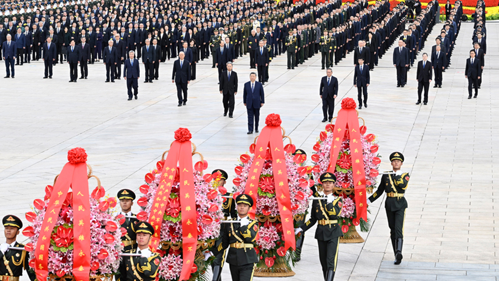
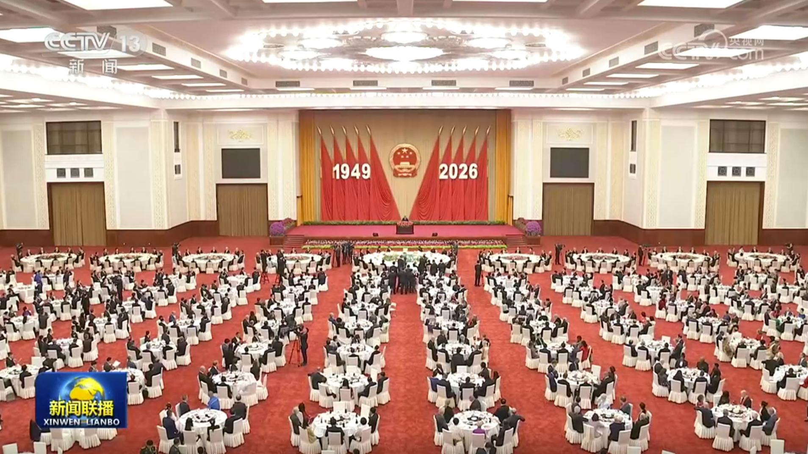
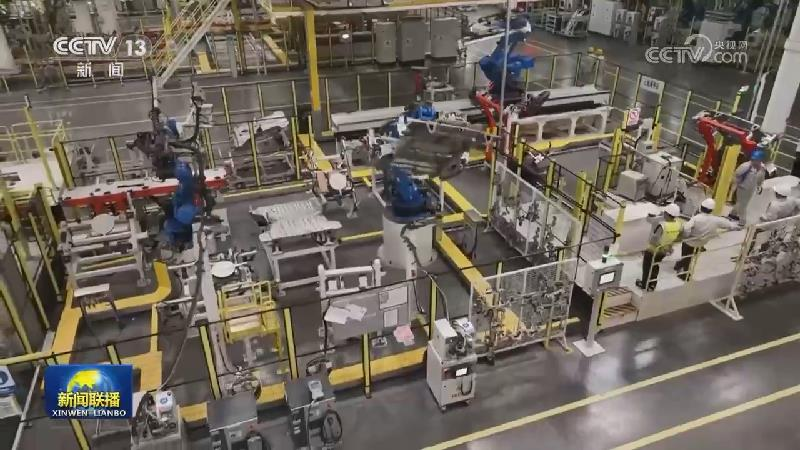
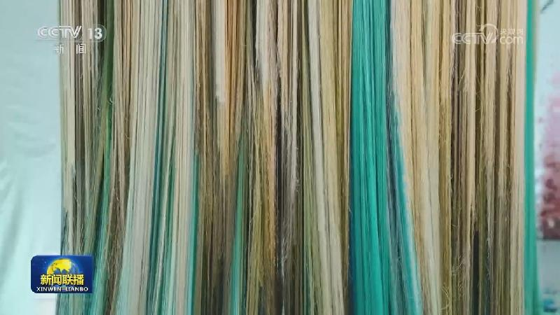

01

烈士纪念日向人民英雄敬献花篮仪式在京隆重举行
烈士纪念日向人民英雄敬献花篮仪式在京隆重举行习近平李强赵乐际王沪宁蔡奇丁薛祥李希韩正出席


烈士纪念日向人民英雄敬献花篮仪式在京隆重举行习近平李强赵乐际王沪宁蔡奇丁薛祥李希韩正出席

庆祝中华人民共和国成立77周年招待会在京举行习近平发表重要讲话
明天（10月1日）出版的《人民日报》将发表社论，题目是《在新的伟大征程上接续奋斗再创辉煌——热烈庆祝中华人民共和国成立七十七周年》。
9月30日，国家主席习近平同文莱苏丹哈桑纳尔互致贺电，庆祝两国建交35周年。
国务院新闻办今天（9月30日）举行“开局起步‘十五五’”系列主题新闻发布会，水利部相关负责人介绍加快建设现代化水网的有关情况。

国家统计局服务业调查中心、中国物流与采购联合会今天（9月30日）公布，9月中国制造业采购经理指数为50.1%，较上月上升0.3个百分点，重回扩张区间。
国庆将至，各地大街小巷装扮一新，特色活动丰富多彩，节日氛围浓厚。喜迎国庆，中国红扮靓城市街巷。在黑龙江哈尔滨，五星红旗迎风招展、城市地标花团锦簇，洋溢着喜庆热烈的节日气氛。在福建厦门，城市主干道上国旗飘扬，主题花卉色彩缤纷。在辽宁大连，1.8万面国旗悬挂在城市街道两侧，表达着人们对祖国的深深祝福。

254项国家标准10月1日起实施
近日，中国驻多国及国际组织的使馆、使团等举办国庆招待会等活动，庆祝中华人民共和国成立77周年。
伊朗称已收到美国就推进谈判条件的回复